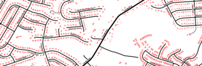

Mapping GeoTagged Photos with Leaflet.Photo and the Flickr API

Web Map of Starbucks vs. Dunkin' Donuts using Albers Projection in Leaflet

Displaying ~83,000 buildings in Spotsylvania County, Virginia with VectorGrid
